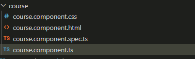
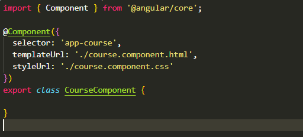
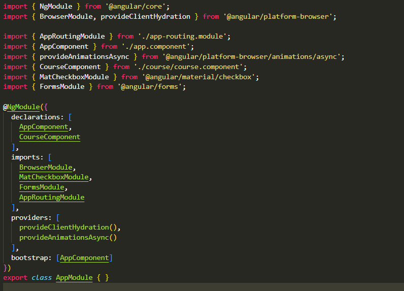
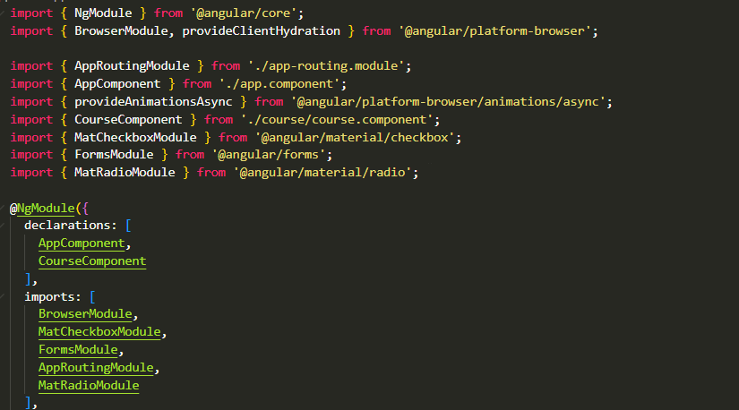

Angular is an advanced, freely available application development platform developed by Google and the development community. It is generally used to create single-page applications for clients using the Model, View, and Controller (MVC) architectural framework. Angular offers a systematic approach to web development by providing a collection of tools and frameworks for activities like routing, data binding, and dependency injection.
Components in Angular are modular and reusable units of code that define views, comprising sets of screen elements users interact with. They encapsulate both UI elements and logic, typically representing specific features or sections of an application. Components use services for functionality not directly related to views, injecting them as dependencies to promote modularity, reusability, and efficiency. Both components and services are implemented as classes with decorators providing metadata for Angular's use.
i. Key feature of Angular - entire app is composed of components.
ii. Each component has its own .html, .css, and .ts (typescript).
iii. Components are reusable.
ng generate component componentName --skip-tests
(--skip-tests) - This will remove the .spec.ts file (used for unit testing)!
NOTE: To create a component WITHIN another folder, just add folderName/ before componentName
Shortcut: ng g c componentName --skip-tests
(a.) Delete the folder manually
(b.) Remove reference from app.module.ts
i. Delete import line
ii. Remove reference in @NgModule declarations
Code: ng g c course

The 'course' Component has all the html, css, ts(typescript), spec.ts(testing file) files after creating the component.

Selector: 'app-course' (Custom tag for component)
TemplateUrl: './course.component.html' (Path to the HTML for component)
StyleUrls: './course.component.css' (Stylesheet to apply to Component)
After creating the course component, it wil directly import their path in app.module.ts file and also the Course Component is declared in declarations section as well.
Angular Material is a UI component library designed to enhance web applications by providing a set of modern, consistent, and efficient user interface components. It helps developers create attractive and consistent user experiences while improving the performance of their applications. By leveraging Angular Material, developers can easily incorporate pre-built components that offer a better look and feel compared to native HTML elements. Angular Material's components are optimized, well-tested, and well-documented, ensuring a seamless integration and development experience.
ng add @angular/material
It will install angular material, Component Development Kit(CDK) and Angular Animations
Mat-checkbox provides the same functionality as a native "checkbox" enhanced with Material Design styling and animations.
API reference for Angular Material Checkbox

Code:
import {MatCheckboxModule} from '@angular/material/checkbox';
This import need to be add in "app.module.ts" file and also need to declare in declarations section for implemention of mat-checkbox tag.
This is html file:
<div>
<mat-checkbox [(ngModel)]="isChecked">Check me</mat-checkbox>
</div>
<div *ngIf="isChecked">
<p>The checkbox is checked!</p>
</div>
The HTML code creates a mat-checkbox component from Angular Material, utilizing two-way data binding with [(ngModel)] to synchronize the checkbox state
with the isChecked property in the component class. This property determines the visibility of a div section through *ngIf, toggling its display based
on the value of isChecked.
This is typescript file:
import { Component } from '@angular/core';
@Component
({
selector: 'app-course',
templateUrl: './course.component.html',
styleUrl: './course.component.css'
})
export class CourseComponent
{
isChecked: boolean = false;
}
The CourseComponent class defines isChecked as a boolean property initialized to false, binding it to the checkbox for dynamic
state management within the component.
Mat-radio-button provides the same functionality as a native type "radio" enhanced with Material Design styling and animations.
API reference for Angular Material Radio

Code:
import {MatRadioModule} from '@angular/material/radio';
This import need to be add in "app.module.ts" file and also need to declare in declarations section for implemention of mat-checkbox tag.
This is html file:
<label id="example-radio-group-label">Pick your favorite season</label>
<mat-radio-group
aria-labelledby="example-radio-group-label"
class="example-radio-group"
[(ngModel)]="favoriteSeason">
<mat-radio-button *ngFor="let season of seasons" class="example-radio-button" [value]="season">
{{season}}
</mat-radio-button>
</mat-radio-group>
<div>Your favorite season is: {{favoriteSeason}}</div>
The HTML file (radio-buttons.component.html) structures the radio button component. It includes a label providing context for the radio
group, a mat-radio-group element wrapping the radio buttons, and a div to display the selected season dynamically. Each radio button is generated using
ngFor to loop through the seasons array, and its value is bound to the corresponding season.
This is typescript file:
import { Component } from '@angular/core';
@Component({
selector: 'app-course',
templateUrl: './course.component.html',
styleUrl: './course.component.css'
})
export class CourseComponent {
favoriteSeason: string;
seasons: string[] = ['Winter', 'Spring', 'Summer', 'Autumn'];
constructor() {
this.favoriteSeason = this.seasons[0];
}
}
It imports the Component decorator and defines the CourseComponent class, which holds the selected favorite season and the list of available
seasons. The constructor initializes the favoriteSeason variable with the first season from the seasons array.